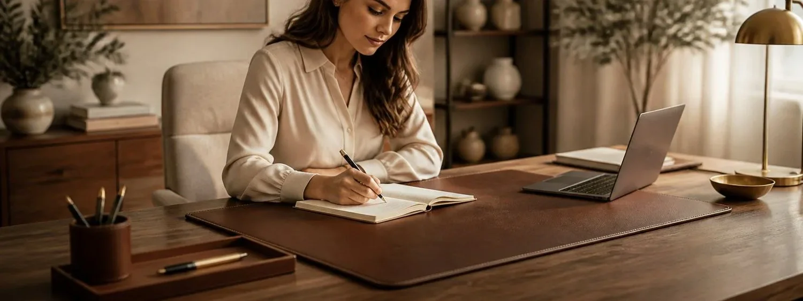

Start with LeStallion’s product shortlist: 7 Best Leather Desk Blotters. This Surge-hosted support guide turns that list into practical desk-surface questions: how the mat writes, how it protects wood or glass, how it fits a laptop setup, and how it will age after months of coffee, notes, and daily keyboard use.
Cloud-chain context: this follows the Vercel article on under-desk treadmills, moving from active workday movement into the surface where planning, writing, and focused office work happen.
Writing Surface, Mouse Glide, and Keyboard Comfort
Daily writing feel. A leather desk blotter should make handwritten notes feel steadier without making a mouse drag or a keyboard slide. Check how the surface handles pen pressure, paper edges, optical mice, and a palm resting near the front edge of the desk. For writing surface, mouse glide, and keyboard comfort, judge the blotter by how it changes the whole work surface, not by a product photo alone.
A useful home-office rehearsal is to place a sheet of paper where the mat would sit, then mark keyboard width, mouse travel, notebook angle, laptop heat zones, coaster position, and the front wrist area. That quick map clarifies whether writing surface, mouse glide, and keyboard comfort needs a wide pad, a narrower writing mat, a rail style, or a softer protective layer.
Material honesty. Real leather, bonded leather, vegan leather, and PU mats age very differently. The right choice depends on whether you want patina, a low-maintenance wipeable surface, animal-free materials, or a formal executive look that still tolerates everyday office use. For writing surface, mouse glide, and keyboard comfort, judge the blotter by how it changes the whole work surface, not by a product photo alone.
A useful home-office rehearsal is to place a sheet of paper where the mat would sit, then mark keyboard width, mouse travel, notebook angle, laptop heat zones, coaster position, and the front wrist area. That quick map clarifies whether writing surface, mouse glide, and keyboard comfort needs a wide pad, a narrower writing mat, a rail style, or a softer protective layer.
Desk layout. Measure the active zone rather than the whole desktop. A blotter may need room for a laptop, notebook, pen tray, phone stand, coaster, keyboard, and mouse without covering cable grommets or making the desk feel cramped. For writing surface, mouse glide, and keyboard comfort, judge the blotter by how it changes the whole work surface, not by a product photo alone.
A useful home-office rehearsal is to place a sheet of paper where the mat would sit, then mark keyboard width, mouse travel, notebook angle, laptop heat zones, coaster position, and the front wrist area. That quick map clarifies whether writing surface, mouse glide, and keyboard comfort needs a wide pad, a narrower writing mat, a rail style, or a softer protective layer.
Protection routine. The point is not only style. A good mat protects wood, glass, veneer, or laminate from laptop feet, watch clasps, pen impressions, coffee rings, warm mugs, and the subtle polish marks caused by sliding accessories around all day. For writing surface, mouse glide, and keyboard comfort, judge the blotter by how it changes the whole work surface, not by a product photo alone.
A useful home-office rehearsal is to place a sheet of paper where the mat would sit, then mark keyboard width, mouse travel, notebook angle, laptop heat zones, coaster position, and the front wrist area. That quick map clarifies whether writing surface, mouse glide, and keyboard comfort needs a wide pad, a narrower writing mat, a rail style, or a softer protective layer.
Visual tone. Color and stitching change the room. Dark brown reads classic, black reads formal, cognac feels warmer, green can look library-like, and a slim stitched border can make a small desk feel intentionally arranged rather than crowded. For writing surface, mouse glide, and keyboard comfort, judge the blotter by how it changes the whole work surface, not by a product photo alone.
A useful home-office rehearsal is to place a sheet of paper where the mat would sit, then mark keyboard width, mouse travel, notebook angle, laptop heat zones, coaster position, and the front wrist area. That quick map clarifies whether writing surface, mouse glide, and keyboard comfort needs a wide pad, a narrower writing mat, a rail style, or a softer protective layer.
Care and value. Curling edges, odor, stain resistance, backing grip, cleaning instructions, warranty language, and return policy matter because desk blotters are touched every workday. A cheaper mat that curls at the corners can feel expensive quickly. For writing surface, mouse glide, and keyboard comfort, judge the blotter by how it changes the whole work surface, not by a product photo alone.
A useful home-office rehearsal is to place a sheet of paper where the mat would sit, then mark keyboard width, mouse travel, notebook angle, laptop heat zones, coaster position, and the front wrist area. That quick map clarifies whether writing surface, mouse glide, and keyboard comfort needs a wide pad, a narrower writing mat, a rail style, or a softer protective layer.
Buyer field note. The best leather desk blotter for writing surface, mouse glide, and keyboard comfort should disappear into the routine: quiet under the keyboard, smooth under the mouse, protective under mugs and laptop feet, and polished enough to make the desk feel finished without demanding delicate care.
Full-Grain, Top-Grain, Vegan, and PU Leather Choices
Daily writing feel. A leather desk blotter should make handwritten notes feel steadier without making a mouse drag or a keyboard slide. Check how the surface handles pen pressure, paper edges, optical mice, and a palm resting near the front edge of the desk. For full-grain, top-grain, vegan, and pu leather choices, judge the blotter by how it changes the whole work surface, not by a product photo alone.
A useful home-office rehearsal is to place a sheet of paper where the mat would sit, then mark keyboard width, mouse travel, notebook angle, laptop heat zones, coaster position, and the front wrist area. That quick map clarifies whether full-grain, top-grain, vegan, and pu leather choices needs a wide pad, a narrower writing mat, a rail style, or a softer protective layer.
Material honesty. Real leather, bonded leather, vegan leather, and PU mats age very differently. The right choice depends on whether you want patina, a low-maintenance wipeable surface, animal-free materials, or a formal executive look that still tolerates everyday office use. For full-grain, top-grain, vegan, and pu leather choices, judge the blotter by how it changes the whole work surface, not by a product photo alone.
A useful home-office rehearsal is to place a sheet of paper where the mat would sit, then mark keyboard width, mouse travel, notebook angle, laptop heat zones, coaster position, and the front wrist area. That quick map clarifies whether full-grain, top-grain, vegan, and pu leather choices needs a wide pad, a narrower writing mat, a rail style, or a softer protective layer.
Desk layout. Measure the active zone rather than the whole desktop. A blotter may need room for a laptop, notebook, pen tray, phone stand, coaster, keyboard, and mouse without covering cable grommets or making the desk feel cramped. For full-grain, top-grain, vegan, and pu leather choices, judge the blotter by how it changes the whole work surface, not by a product photo alone.
A useful home-office rehearsal is to place a sheet of paper where the mat would sit, then mark keyboard width, mouse travel, notebook angle, laptop heat zones, coaster position, and the front wrist area. That quick map clarifies whether full-grain, top-grain, vegan, and pu leather choices needs a wide pad, a narrower writing mat, a rail style, or a softer protective layer.
Protection routine. The point is not only style. A good mat protects wood, glass, veneer, or laminate from laptop feet, watch clasps, pen impressions, coffee rings, warm mugs, and the subtle polish marks caused by sliding accessories around all day. For full-grain, top-grain, vegan, and pu leather choices, judge the blotter by how it changes the whole work surface, not by a product photo alone.
A useful home-office rehearsal is to place a sheet of paper where the mat would sit, then mark keyboard width, mouse travel, notebook angle, laptop heat zones, coaster position, and the front wrist area. That quick map clarifies whether full-grain, top-grain, vegan, and pu leather choices needs a wide pad, a narrower writing mat, a rail style, or a softer protective layer.
Visual tone. Color and stitching change the room. Dark brown reads classic, black reads formal, cognac feels warmer, green can look library-like, and a slim stitched border can make a small desk feel intentionally arranged rather than crowded. For full-grain, top-grain, vegan, and pu leather choices, judge the blotter by how it changes the whole work surface, not by a product photo alone.
A useful home-office rehearsal is to place a sheet of paper where the mat would sit, then mark keyboard width, mouse travel, notebook angle, laptop heat zones, coaster position, and the front wrist area. That quick map clarifies whether full-grain, top-grain, vegan, and pu leather choices needs a wide pad, a narrower writing mat, a rail style, or a softer protective layer.
Care and value. Curling edges, odor, stain resistance, backing grip, cleaning instructions, warranty language, and return policy matter because desk blotters are touched every workday. A cheaper mat that curls at the corners can feel expensive quickly. For full-grain, top-grain, vegan, and pu leather choices, judge the blotter by how it changes the whole work surface, not by a product photo alone.
A useful home-office rehearsal is to place a sheet of paper where the mat would sit, then mark keyboard width, mouse travel, notebook angle, laptop heat zones, coaster position, and the front wrist area. That quick map clarifies whether full-grain, top-grain, vegan, and pu leather choices needs a wide pad, a narrower writing mat, a rail style, or a softer protective layer.
Buyer field note. The best leather desk blotter for full-grain, top-grain, vegan, and pu leather choices should disappear into the routine: quiet under the keyboard, smooth under the mouse, protective under mugs and laptop feet, and polished enough to make the desk feel finished without demanding delicate care.
Desk Size, Laptop Layout, and Edge Clearance
Daily writing feel. A leather desk blotter should make handwritten notes feel steadier without making a mouse drag or a keyboard slide. Check how the surface handles pen pressure, paper edges, optical mice, and a palm resting near the front edge of the desk. For desk size, laptop layout, and edge clearance, judge the blotter by how it changes the whole work surface, not by a product photo alone.
A useful home-office rehearsal is to place a sheet of paper where the mat would sit, then mark keyboard width, mouse travel, notebook angle, laptop heat zones, coaster position, and the front wrist area. That quick map clarifies whether desk size, laptop layout, and edge clearance needs a wide pad, a narrower writing mat, a rail style, or a softer protective layer.
Material honesty. Real leather, bonded leather, vegan leather, and PU mats age very differently. The right choice depends on whether you want patina, a low-maintenance wipeable surface, animal-free materials, or a formal executive look that still tolerates everyday office use. For desk size, laptop layout, and edge clearance, judge the blotter by how it changes the whole work surface, not by a product photo alone.
A useful home-office rehearsal is to place a sheet of paper where the mat would sit, then mark keyboard width, mouse travel, notebook angle, laptop heat zones, coaster position, and the front wrist area. That quick map clarifies whether desk size, laptop layout, and edge clearance needs a wide pad, a narrower writing mat, a rail style, or a softer protective layer.
Desk layout. Measure the active zone rather than the whole desktop. A blotter may need room for a laptop, notebook, pen tray, phone stand, coaster, keyboard, and mouse without covering cable grommets or making the desk feel cramped. For desk size, laptop layout, and edge clearance, judge the blotter by how it changes the whole work surface, not by a product photo alone.
A useful home-office rehearsal is to place a sheet of paper where the mat would sit, then mark keyboard width, mouse travel, notebook angle, laptop heat zones, coaster position, and the front wrist area. That quick map clarifies whether desk size, laptop layout, and edge clearance needs a wide pad, a narrower writing mat, a rail style, or a softer protective layer.
Protection routine. The point is not only style. A good mat protects wood, glass, veneer, or laminate from laptop feet, watch clasps, pen impressions, coffee rings, warm mugs, and the subtle polish marks caused by sliding accessories around all day. For desk size, laptop layout, and edge clearance, judge the blotter by how it changes the whole work surface, not by a product photo alone.
A useful home-office rehearsal is to place a sheet of paper where the mat would sit, then mark keyboard width, mouse travel, notebook angle, laptop heat zones, coaster position, and the front wrist area. That quick map clarifies whether desk size, laptop layout, and edge clearance needs a wide pad, a narrower writing mat, a rail style, or a softer protective layer.
Visual tone. Color and stitching change the room. Dark brown reads classic, black reads formal, cognac feels warmer, green can look library-like, and a slim stitched border can make a small desk feel intentionally arranged rather than crowded. For desk size, laptop layout, and edge clearance, judge the blotter by how it changes the whole work surface, not by a product photo alone.
A useful home-office rehearsal is to place a sheet of paper where the mat would sit, then mark keyboard width, mouse travel, notebook angle, laptop heat zones, coaster position, and the front wrist area. That quick map clarifies whether desk size, laptop layout, and edge clearance needs a wide pad, a narrower writing mat, a rail style, or a softer protective layer.
Care and value. Curling edges, odor, stain resistance, backing grip, cleaning instructions, warranty language, and return policy matter because desk blotters are touched every workday. A cheaper mat that curls at the corners can feel expensive quickly. For desk size, laptop layout, and edge clearance, judge the blotter by how it changes the whole work surface, not by a product photo alone.
A useful home-office rehearsal is to place a sheet of paper where the mat would sit, then mark keyboard width, mouse travel, notebook angle, laptop heat zones, coaster position, and the front wrist area. That quick map clarifies whether desk size, laptop layout, and edge clearance needs a wide pad, a narrower writing mat, a rail style, or a softer protective layer.
Buyer field note. The best leather desk blotter for desk size, laptop layout, and edge clearance should disappear into the routine: quiet under the keyboard, smooth under the mouse, protective under mugs and laptop feet, and polished enough to make the desk feel finished without demanding delicate care.
Heat, Coffee Rings, Scratches, and Spill Protection
Daily writing feel. A leather desk blotter should make handwritten notes feel steadier without making a mouse drag or a keyboard slide. Check how the surface handles pen pressure, paper edges, optical mice, and a palm resting near the front edge of the desk. For heat, coffee rings, scratches, and spill protection, judge the blotter by how it changes the whole work surface, not by a product photo alone.
A useful home-office rehearsal is to place a sheet of paper where the mat would sit, then mark keyboard width, mouse travel, notebook angle, laptop heat zones, coaster position, and the front wrist area. That quick map clarifies whether heat, coffee rings, scratches, and spill protection needs a wide pad, a narrower writing mat, a rail style, or a softer protective layer.
Material honesty. Real leather, bonded leather, vegan leather, and PU mats age very differently. The right choice depends on whether you want patina, a low-maintenance wipeable surface, animal-free materials, or a formal executive look that still tolerates everyday office use. For heat, coffee rings, scratches, and spill protection, judge the blotter by how it changes the whole work surface, not by a product photo alone.
A useful home-office rehearsal is to place a sheet of paper where the mat would sit, then mark keyboard width, mouse travel, notebook angle, laptop heat zones, coaster position, and the front wrist area. That quick map clarifies whether heat, coffee rings, scratches, and spill protection needs a wide pad, a narrower writing mat, a rail style, or a softer protective layer.
Desk layout. Measure the active zone rather than the whole desktop. A blotter may need room for a laptop, notebook, pen tray, phone stand, coaster, keyboard, and mouse without covering cable grommets or making the desk feel cramped. For heat, coffee rings, scratches, and spill protection, judge the blotter by how it changes the whole work surface, not by a product photo alone.
A useful home-office rehearsal is to place a sheet of paper where the mat would sit, then mark keyboard width, mouse travel, notebook angle, laptop heat zones, coaster position, and the front wrist area. That quick map clarifies whether heat, coffee rings, scratches, and spill protection needs a wide pad, a narrower writing mat, a rail style, or a softer protective layer.
Protection routine. The point is not only style. A good mat protects wood, glass, veneer, or laminate from laptop feet, watch clasps, pen impressions, coffee rings, warm mugs, and the subtle polish marks caused by sliding accessories around all day. For heat, coffee rings, scratches, and spill protection, judge the blotter by how it changes the whole work surface, not by a product photo alone.
A useful home-office rehearsal is to place a sheet of paper where the mat would sit, then mark keyboard width, mouse travel, notebook angle, laptop heat zones, coaster position, and the front wrist area. That quick map clarifies whether heat, coffee rings, scratches, and spill protection needs a wide pad, a narrower writing mat, a rail style, or a softer protective layer.
Visual tone. Color and stitching change the room. Dark brown reads classic, black reads formal, cognac feels warmer, green can look library-like, and a slim stitched border can make a small desk feel intentionally arranged rather than crowded. For heat, coffee rings, scratches, and spill protection, judge the blotter by how it changes the whole work surface, not by a product photo alone.
A useful home-office rehearsal is to place a sheet of paper where the mat would sit, then mark keyboard width, mouse travel, notebook angle, laptop heat zones, coaster position, and the front wrist area. That quick map clarifies whether heat, coffee rings, scratches, and spill protection needs a wide pad, a narrower writing mat, a rail style, or a softer protective layer.
Care and value. Curling edges, odor, stain resistance, backing grip, cleaning instructions, warranty language, and return policy matter because desk blotters are touched every workday. A cheaper mat that curls at the corners can feel expensive quickly. For heat, coffee rings, scratches, and spill protection, judge the blotter by how it changes the whole work surface, not by a product photo alone.
A useful home-office rehearsal is to place a sheet of paper where the mat would sit, then mark keyboard width, mouse travel, notebook angle, laptop heat zones, coaster position, and the front wrist area. That quick map clarifies whether heat, coffee rings, scratches, and spill protection needs a wide pad, a narrower writing mat, a rail style, or a softer protective layer.
Buyer field note. The best leather desk blotter for heat, coffee rings, scratches, and spill protection should disappear into the routine: quiet under the keyboard, smooth under the mouse, protective under mugs and laptop feet, and polished enough to make the desk feel finished without demanding delicate care.
Color, Stitching, Rails, and Executive Office Style
Daily writing feel. A leather desk blotter should make handwritten notes feel steadier without making a mouse drag or a keyboard slide. Check how the surface handles pen pressure, paper edges, optical mice, and a palm resting near the front edge of the desk. For color, stitching, rails, and executive office style, judge the blotter by how it changes the whole work surface, not by a product photo alone.
A useful home-office rehearsal is to place a sheet of paper where the mat would sit, then mark keyboard width, mouse travel, notebook angle, laptop heat zones, coaster position, and the front wrist area. That quick map clarifies whether color, stitching, rails, and executive office style needs a wide pad, a narrower writing mat, a rail style, or a softer protective layer.
Material honesty. Real leather, bonded leather, vegan leather, and PU mats age very differently. The right choice depends on whether you want patina, a low-maintenance wipeable surface, animal-free materials, or a formal executive look that still tolerates everyday office use. For color, stitching, rails, and executive office style, judge the blotter by how it changes the whole work surface, not by a product photo alone.
A useful home-office rehearsal is to place a sheet of paper where the mat would sit, then mark keyboard width, mouse travel, notebook angle, laptop heat zones, coaster position, and the front wrist area. That quick map clarifies whether color, stitching, rails, and executive office style needs a wide pad, a narrower writing mat, a rail style, or a softer protective layer.
Desk layout. Measure the active zone rather than the whole desktop. A blotter may need room for a laptop, notebook, pen tray, phone stand, coaster, keyboard, and mouse without covering cable grommets or making the desk feel cramped. For color, stitching, rails, and executive office style, judge the blotter by how it changes the whole work surface, not by a product photo alone.
A useful home-office rehearsal is to place a sheet of paper where the mat would sit, then mark keyboard width, mouse travel, notebook angle, laptop heat zones, coaster position, and the front wrist area. That quick map clarifies whether color, stitching, rails, and executive office style needs a wide pad, a narrower writing mat, a rail style, or a softer protective layer.
Protection routine. The point is not only style. A good mat protects wood, glass, veneer, or laminate from laptop feet, watch clasps, pen impressions, coffee rings, warm mugs, and the subtle polish marks caused by sliding accessories around all day. For color, stitching, rails, and executive office style, judge the blotter by how it changes the whole work surface, not by a product photo alone.
A useful home-office rehearsal is to place a sheet of paper where the mat would sit, then mark keyboard width, mouse travel, notebook angle, laptop heat zones, coaster position, and the front wrist area. That quick map clarifies whether color, stitching, rails, and executive office style needs a wide pad, a narrower writing mat, a rail style, or a softer protective layer.
Visual tone. Color and stitching change the room. Dark brown reads classic, black reads formal, cognac feels warmer, green can look library-like, and a slim stitched border can make a small desk feel intentionally arranged rather than crowded. For color, stitching, rails, and executive office style, judge the blotter by how it changes the whole work surface, not by a product photo alone.
A useful home-office rehearsal is to place a sheet of paper where the mat would sit, then mark keyboard width, mouse travel, notebook angle, laptop heat zones, coaster position, and the front wrist area. That quick map clarifies whether color, stitching, rails, and executive office style needs a wide pad, a narrower writing mat, a rail style, or a softer protective layer.
Care and value. Curling edges, odor, stain resistance, backing grip, cleaning instructions, warranty language, and return policy matter because desk blotters are touched every workday. A cheaper mat that curls at the corners can feel expensive quickly. For color, stitching, rails, and executive office style, judge the blotter by how it changes the whole work surface, not by a product photo alone.
A useful home-office rehearsal is to place a sheet of paper where the mat would sit, then mark keyboard width, mouse travel, notebook angle, laptop heat zones, coaster position, and the front wrist area. That quick map clarifies whether color, stitching, rails, and executive office style needs a wide pad, a narrower writing mat, a rail style, or a softer protective layer.
Buyer field note. The best leather desk blotter for color, stitching, rails, and executive office style should disappear into the routine: quiet under the keyboard, smooth under the mouse, protective under mugs and laptop feet, and polished enough to make the desk feel finished without demanding delicate care.
Cleaning, Curling, Warranty, and Long-Term Value
Daily writing feel. A leather desk blotter should make handwritten notes feel steadier without making a mouse drag or a keyboard slide. Check how the surface handles pen pressure, paper edges, optical mice, and a palm resting near the front edge of the desk. For cleaning, curling, warranty, and long-term value, judge the blotter by how it changes the whole work surface, not by a product photo alone.
A useful home-office rehearsal is to place a sheet of paper where the mat would sit, then mark keyboard width, mouse travel, notebook angle, laptop heat zones, coaster position, and the front wrist area. That quick map clarifies whether cleaning, curling, warranty, and long-term value needs a wide pad, a narrower writing mat, a rail style, or a softer protective layer.
Material honesty. Real leather, bonded leather, vegan leather, and PU mats age very differently. The right choice depends on whether you want patina, a low-maintenance wipeable surface, animal-free materials, or a formal executive look that still tolerates everyday office use. For cleaning, curling, warranty, and long-term value, judge the blotter by how it changes the whole work surface, not by a product photo alone.
A useful home-office rehearsal is to place a sheet of paper where the mat would sit, then mark keyboard width, mouse travel, notebook angle, laptop heat zones, coaster position, and the front wrist area. That quick map clarifies whether cleaning, curling, warranty, and long-term value needs a wide pad, a narrower writing mat, a rail style, or a softer protective layer.
Desk layout. Measure the active zone rather than the whole desktop. A blotter may need room for a laptop, notebook, pen tray, phone stand, coaster, keyboard, and mouse without covering cable grommets or making the desk feel cramped. For cleaning, curling, warranty, and long-term value, judge the blotter by how it changes the whole work surface, not by a product photo alone.
A useful home-office rehearsal is to place a sheet of paper where the mat would sit, then mark keyboard width, mouse travel, notebook angle, laptop heat zones, coaster position, and the front wrist area. That quick map clarifies whether cleaning, curling, warranty, and long-term value needs a wide pad, a narrower writing mat, a rail style, or a softer protective layer.
Protection routine. The point is not only style. A good mat protects wood, glass, veneer, or laminate from laptop feet, watch clasps, pen impressions, coffee rings, warm mugs, and the subtle polish marks caused by sliding accessories around all day. For cleaning, curling, warranty, and long-term value, judge the blotter by how it changes the whole work surface, not by a product photo alone.
A useful home-office rehearsal is to place a sheet of paper where the mat would sit, then mark keyboard width, mouse travel, notebook angle, laptop heat zones, coaster position, and the front wrist area. That quick map clarifies whether cleaning, curling, warranty, and long-term value needs a wide pad, a narrower writing mat, a rail style, or a softer protective layer.
Visual tone. Color and stitching change the room. Dark brown reads classic, black reads formal, cognac feels warmer, green can look library-like, and a slim stitched border can make a small desk feel intentionally arranged rather than crowded. For cleaning, curling, warranty, and long-term value, judge the blotter by how it changes the whole work surface, not by a product photo alone.
A useful home-office rehearsal is to place a sheet of paper where the mat would sit, then mark keyboard width, mouse travel, notebook angle, laptop heat zones, coaster position, and the front wrist area. That quick map clarifies whether cleaning, curling, warranty, and long-term value needs a wide pad, a narrower writing mat, a rail style, or a softer protective layer.
Care and value. Curling edges, odor, stain resistance, backing grip, cleaning instructions, warranty language, and return policy matter because desk blotters are touched every workday. A cheaper mat that curls at the corners can feel expensive quickly. For cleaning, curling, warranty, and long-term value, judge the blotter by how it changes the whole work surface, not by a product photo alone.
A useful home-office rehearsal is to place a sheet of paper where the mat would sit, then mark keyboard width, mouse travel, notebook angle, laptop heat zones, coaster position, and the front wrist area. That quick map clarifies whether cleaning, curling, warranty, and long-term value needs a wide pad, a narrower writing mat, a rail style, or a softer protective layer.
Buyer field note. The best leather desk blotter for cleaning, curling, warranty, and long-term value should disappear into the routine: quiet under the keyboard, smooth under the mouse, protective under mugs and laptop feet, and polished enough to make the desk feel finished without demanding delicate care.
Shortlist by surface behavior first
Before judging style alone, define the desk size, writing habit, mouse use, material preference, spill risk, heat exposure, and care routine. Then compare the actual candidates in 7 Best Leather Desk Blotters.
Final buying note
A good blotter makes the desk calmer: fewer scratches, steadier writing, a clearer visual zone, and a surface that feels good every morning. Use the LeStallion shortlist as the product layer after these fit questions are answered: 7 Best Leather Desk Blotters.